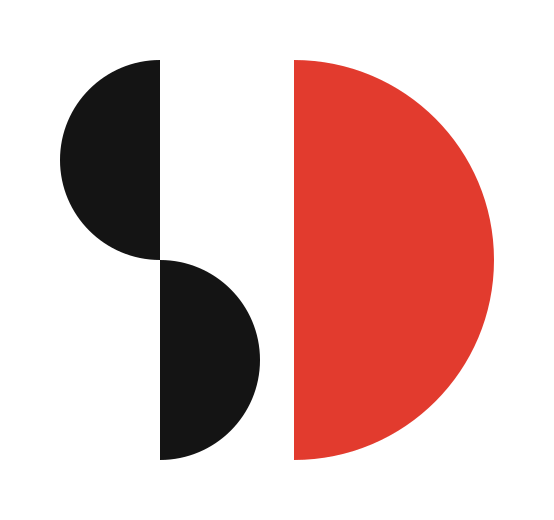
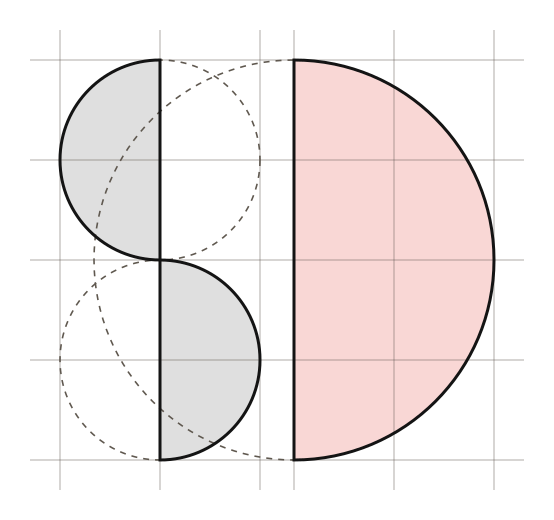
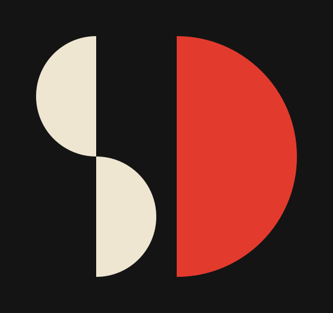
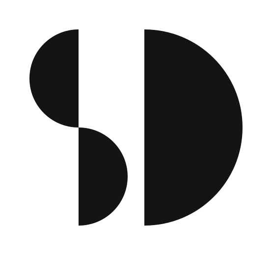
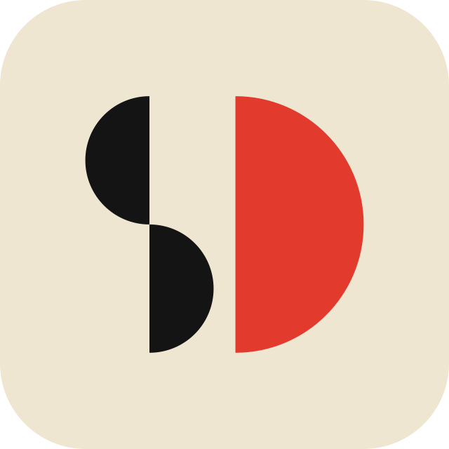
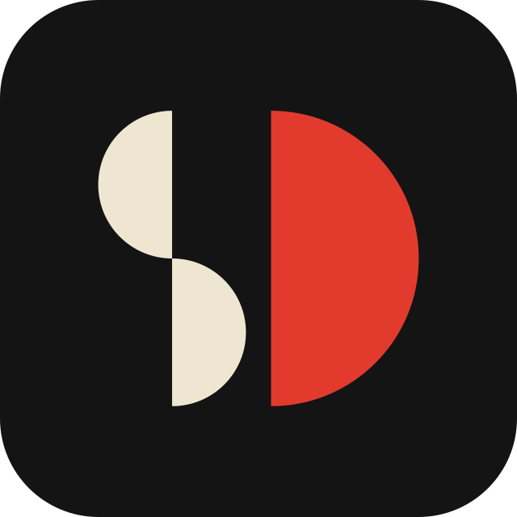

Three half-discs and nothing else. Two small ones turned against each other make the S; the same shape at twice the size is the D. The red D is half of the stamp the site already prints, and a sun coming up over the sea.

Three half-discs and nothing else. Two small ones turned against each other make the S; the same shape at twice the size is the D. The red D is half of the stamp the site already prints, and a sun coming up over the sea.

One module, r. The S is two half-discs of radius r; the D is one of radius 2r. Every edge sits on the grid, so the mark can be drawn with a compass and a ruler.



